来源：用户提供的 笔记(1).zip / 03_笔记/day05_数组/day05.数组.md。保留原课程内容，历史环境、示例错误和故意报错的教学代码应结合上下文阅读。
day05.数组
java
课前回顾:
1.Scanner:
a.导包: import java.util.Scanner
b.创建对象:Scanner 名字 = new Scanner(System.in)
c.调用方法:
nextInt()录入一个整数
next()录入一个字符串,遇到空格和回车就结束
nextLine()录入一个字符串,遇到回车就结束
2.switch:选择语句
a.格式:
switch(变量){
case 常量值1:
执行语句1;
break;
case 常量值2:
执行语句2;
break;
...
default:
执行语句n;
break;
}
b.执行流程:用变量代表的值去精准匹配,配上哪个case就走哪个case对应的执行语句,如果都配不上,就走default
c.没有break:会出现case的穿透性,一直穿透,直到遇到break或者switch结束为止
3.if...else:
a.格式:
if(boolean表达式){
执行语句1
}else{
执行语句2
}
b.执行流程:
先走if后面的boolean表达式,如果是true,就走if后面的执行语句1,否则就走else后面的执行语句2
4.else...if
a.格式:
if(boolean表达式){
执行语句1
}else if(boolean表达式){
执行语句2
}else if(boolean表达式){
执行语句3
}...else{
执行语句n
}
b.执行流程:
从上到下挨个判断,哪个条件为true,就走哪个if对应的执行语句,以上所有的if都没有匹配上,走else
5.for循环:
a.格式:
for(初始化变量;比较;步进表达式){
循环语句
}
b.执行流程:
先初始化变量,比较,如果是true,走循环语句
走步进表达式,再比较,如果还是true,继续循环,直到比较为false,循环结束
6.while循环:
a.格式:
初始化变量;
while(比较){
循环语句
步进表达式
}
b.执行流程
先初始化变量,比较,如果是true,走循环语句
走步进表达式,再比较,如果还是true,继续循环,直到比较为false,循环结束
7.do...while循环:
a.格式:
初始化变量;
do{
循环语句
步进表达式
}while(比较);
b.执行流程:
初始化变量;
循环语句
步进表达式
比较,如果是true,继续循环,直到比较为false
8.死循环:比较永远是true
9.嵌套循环:
先走外层循环,再走内层循环,内层循环就一直循环,直到内层循环结束了,外层循环再进入下一次循环,直到连外层循环都结束了,循环整体结束
10.循环控制关键字:
break:结束循环
continue:结束本次循环进入下一次循环
9.Random
a.概述:java定义好的类
b.作用:在指定的范围内随机一个数
c.使用:
导包-> import java.util.Random
创建对象-> Random 对象名 = new Random()
调用方法:
对象名.nextInt() 在int的取值范围内随机一个数
对象名.nextInt(int bound) -> 在0-(bound-1)之间随机
模块五重点:
1.数组的定义和特点
2.数组的操作(存数据,取数据,遍历数据)
3.二维数组(定义,取,存,遍历)
第一章.数组的定义
java
1.问题:想将一个数据保存起来,我们可以使用变量,但是变量一次只能存储一个数据,所以我们想能不能一次存多个数据
2.数组概述:是一个容器,数组本身属于引用数据类型
3.作用:一次存储多个数据
4.特点:
a.既可以存储基本类型的数据,还能存储引用类型的数据
b.定长(定义数组时长度为多长,最多就能存多少个数据)
5.定义:
a.动态初始化:
数据类型[] 数组名 = new 数据类型[长度]
数据类型 数组名[] = new 数据类型[长度]
各部分解释:
等号左边的数据类型:规定了数组中只能存储什么类型的元素
[]:代表的是数组,一个[]代表一维数组,两个[][]代表二维数组
数组名:自己取的名字,遵循小驼峰
new:代表的是创建数组
等号右边的数据类型:要和等号左边的数据类型一致
[长度]:指定数组长度,规定了数组最多能存多少个数据
b.静态初始化
数据类型[] 数组名 = new 数据类型[]{元素1,元素2...} -> 不推荐使用
数据类型 数组名[] = new 数据类型[]{元素1,元素2...} -> 不推荐使用
c.简化的静态初始化:
数据类型[] 数组名 = {元素1,元素2...}-> 推荐使用
6.区别:
a.动态初始化:定义的时候只指定了长度,没有存具体的数据
当只知道长度,但不知道具体存啥数据时可以使用动态初始化
b.静态初始化:定义的时候就直接知道存啥了
java
public class Demo01Array {
public static void main(String[] args) {
//动态初始化
int[] arr1 = new int[3];
String[] arr2 = new String[3];
//静态初始化
int[] arr3 = new int[]{1,2,3,4,5};
//简化静态初始化
int[] arr4 = {1,2,3,4,5};
String[] arr5 = {"乾隆","和珅","纪晓岚"};
}
}
第二章.数组操作
1.获取数组的长度
java
1.格式:
数组名.length
2.注意:
length后面不要带小括号,因为length不是一个方法,而是数组中的一个属性
java
public class Demo01Array {
public static void main(String[] args) {
//定义一个数组
String[] arr1 = {"迪迦奥特曼","猫和老鼠","花园宝宝","海绵宝宝","圣斗士","百变小樱魔术卡","熊出没"};
int len = arr1.length;
System.out.println("len = " + len);
}
}
2.索引
java
1.概述:元素在数组中存储的位置
2.特点:
a.索引唯一
b.索引都是从0开始的,最大索引是数组长度-1
3.注意:
我们将来操作元素,必须通过索引来操作
存数据,要指定索引
取数据,要指定索引
查数据,要指定索引
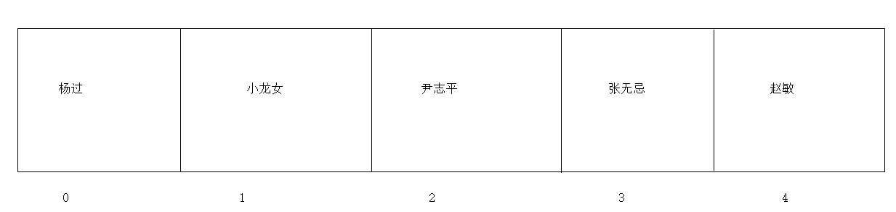
3.存储元素
java
1.格式:
数组名[索引值] = 值 -> 将等号右边的值放到数组指定的索引位置上
java
public class Demo02Array {
public static void main(String[] args) {
int[] arr = new int[3];
arr[0] = 100;//将100存到了arr这个数组的0索引上
arr[1] = 200;//将200存到了arr这个数组的1索引上
arr[2] = 300;//将300存到了arr这个数组的2索引上
//arr[3] = 1000;
System.out.println("============================");
String[] arr1 = new String[3];
arr1[0] = "东方不败";
arr1[1] = "岳不群";
arr1[2] = "林平之";
}
}
java
public class Demo03Array {
public static void main(String[] args) {
//键盘录入三个整数,存储到数组中
int[] arr = new int[3];
Scanner sc = new Scanner(System.in);
/*
先看等号右边的,先录入,将录入的数据保存到指定的索引位置上
*/
/* arr[0] = sc.nextInt();
arr[1] = sc.nextInt();
arr[2] = sc.nextInt();*/
/* for (int i = 0; i < 3; i++) {
arr[i] = sc.nextInt();
}*/
for (int i = 0; i < arr.length; i++) {
arr[i] = sc.nextInt();
}
}
}
java
public class Demo04Array {
public static void main(String[] args) {
//定义一个长度为3的数组
int[] arr = new int[3];
Random rd = new Random();
//arr[0] = rd.nextInt(10);
//arr[1] = rd.nextInt(10);
//arr[2] = rd.nextInt(10);
for (int i = 0;i<arr.length;i++){
/*
先看等号右边的,先随机一个数保存到指定的索引位置上
*/
arr[i] = rd.nextInt(10);
}
}
}
4.获取元素
java
1.地址值:
数组在内存中的身份证号,唯一标识,我们可以通过这个唯一标识到内存中准确找到这个数,从而操作这个数组中的数据
2.注意:
a.直接输出数组名,会直接输出数组在内存中的地址值
b.如果数组中没有存元素,那么直接获取索引上对应的元素也是有值的,只不过不是我们存储的数据,而是数组中的元素默认值
整数: 0
小数: 0.0
字符: '\u0000' -> 空白字符 -> 对应的int值是0
布尔: false
引用: null
java
public class Demo05Array {
public static void main(String[] args) {
int[] arr = new int[3];
arr[0] = 100;
arr[1] = 200;
arr[2] = 300;
System.out.println(arr);//[I@135fbaa4 -> 地址值
System.out.println(arr[0]);//输出0索引上的元素
System.out.println(arr[1]);//输出1索引上的元素
System.out.println(arr[2]);//输出2索引上的元素
int[] arr1 = new int[3];
arr1[0] = 1000;
arr1[1] = 2000;
arr1[2] = 3000;
System.out.println(arr1);//[I@45ee12a7
System.out.println(arr1[0]);//输出0索引上的元素
System.out.println(arr1[1]);//输出1索引上的元素
System.out.println(arr1[2]);//输出2索引上的元素
System.out.println("=============================");
int[] arr2 = new int[3];
System.out.println(arr2[0]);//输出0索引上的元素 0
System.out.println(arr2[1]);//输出1索引上的元素 0
System.out.println(arr2[2]);//输出2索引上的元素 0
}
}
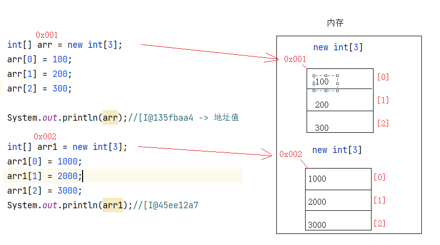
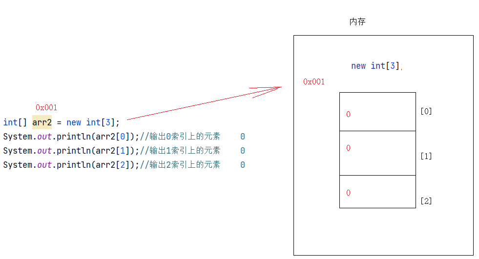
java
public class Demo06Array {
public static void main(String[] args) {
int[] arr = {1,2,3,4,5,6};
//需求:将arr中的数据放到另外一个数组中
/*
如果我们想将arr中的数据复制到新数组中
那么新数组的长度就应该是arr数组的长度
*/
int[] newArr = new int[arr.length];
System.out.println(newArr[0]);//默认值0
System.out.println(newArr[1]);//默认值0
System.out.println(newArr[2]);//默认值0
System.out.println(newArr[3]);//默认值0
System.out.println(newArr[4]);//默认值0
System.out.println(newArr[5]);//默认值0
/*
将arr数组指定索引位置上的元素获取出来放到等号左边newArr数组的指定索引位置上
*/
newArr[0] = arr[0];
newArr[1] = arr[1];
newArr[2] = arr[2];
newArr[3] = arr[3];
newArr[4] = arr[4];
newArr[5] = arr[5];
System.out.println(newArr[0]);
System.out.println(newArr[1]);
System.out.println(newArr[2]);
System.out.println(newArr[3]);
System.out.println(newArr[4]);
System.out.println(newArr[5]);
}
}
arr[0] = arr1[0]
如果数组名[索引值]在等号右边就代表获取
如果数组名[索引值]在等号左边就代表存值
比如 :
a.int element = arr[0] -> 获取0索引上的元素,赋值给一个变量
b.arr[0] = 100 -> 将100存储到0索引上
c.arr[0] = arr1[0] -> 将arr1的0索引上的元素获取出来,赋值给等号左边arr的0索引上
5.遍历数组
java
1.遍历:将元素从数组中一个一个的获取出来
java
public class Demo07Array {
public static void main(String[] args) {
int[] arr = {1, 2, 3, 4, 5, 6};
/*for (int i = 0; i < 6; i++){
System.out.println(arr[i]);
}*/
/* for (int i = 0; i < arr.length; i++){
System.out.println(arr[i]);
}*/
/*
快速遍历快捷键: 数组名.fori
*/
for (int i = 0; i < arr.length; i++) {
System.out.println(arr[i]);
}
}
}
java快速遍历快捷键: 数组名.forijavapublic class Demo08Array { public static void main(String[] args) { int[] arr = {1,2,3,4,5,6}; //需求:将arr中的数据放到另外一个数组中 /* 如果我们想将arr中的数据复制到新数组中 那么新数组的长度就应该是arr数组的长度 */ int[] newArr = new int[arr.length]; System.out.println(newArr[0]);//默认值0 System.out.println(newArr[1]);//默认值0 System.out.println(newArr[2]);//默认值0 System.out.println(newArr[3]);//默认值0 System.out.println(newArr[4]);//默认值0 System.out.println(newArr[5]);//默认值0 /* 将arr数组指定索引位置上的元素获取出来放到等号左边newArr数组的指定索引位置上 */ /* newArr[0] = arr[0]; newArr[1] = arr[1]; newArr[2] = arr[2]; newArr[3] = arr[3]; newArr[4] = arr[4]; newArr[5] = arr[5];*/ for (int i = 0; i < arr.length; i++) { newArr[i] = arr[i]; } //遍历 for (int i = 0; i < newArr.length; i++) { System.out.println(newArr[i]); } } }
第三章.操作数组时两个常见的问题
1.数组索引越界异常_ArrayIndexOutOfBoundsException
java
1.原因:
操作的索引超出了数组索引范围了
java
public class Demo09Array {
public static void main(String[] args) {
int[] arr = new int[3];
arr[0] = 100;
arr[1] = 200;
arr[2] = 300;
//arr[3] = 400;//索引3超出了arr的索引范围
//arr[-1] = 1000;//索引3超出了arr的索引范围
for (int i = 0; i <= arr.length; i++) {
System.out.println(arr[i]);//索引3超出了arr的索引范围
}
}
}
2.空指针异常_NullPointerException
java
1.原因:
当一个对象为null时,再调用此对象中的其他成员
java
public class Demo10Array {
public static void main(String[] args) {
int[] arr = new int[3];
System.out.println(arr.length);//3
arr = null;
System.out.println(arr.length);//NullPointerException
}
}
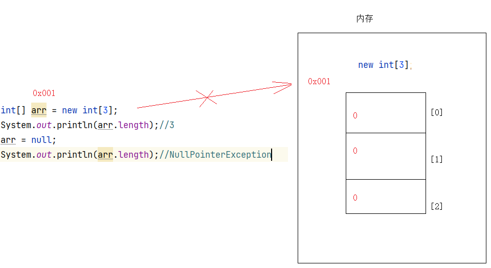
以上两个问题我们只需要知道原因即可
第四章.数组练习
1.练习
java
第一题:需求:求出数组中的元素最大值
步骤:
1.定义一个max,接收两个元素之间的较大值
2.遍历数组,将每一个元素获取出来进行比较
3.判断,如果max小于遍历出来的元素,证明遍历出来的元素大,将大的元素赋值给max
4.直接输出max
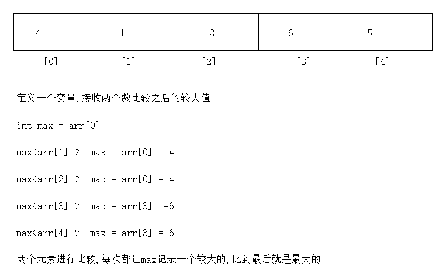
java
public class Demo01GetMax {
public static void main(String[] args) {
int[] arr = {5,3,5,7,4,6,8,9};
//1.定义一个max,接收两个元素之间的较大值
int max = arr[0];
//2.遍历数组,将每一个元素获取出来进行比较
for (int i = 1; i < arr.length; i++) {
//3.判断,如果max小于遍历出来的元素,证明遍历出来的元素大,将大的元素赋值给max
if (max<arr[i]){
max = arr[i];
}
}
//4.直接输出max
System.out.println("max = " + max);
}
}
2.练习
java
随机产生10个[0,100]之间整数，统计既是3又是5，但不是7的倍数的个数
步骤:
1.创建一个Random对象,用于搞随机数
2.定义一个数组,长度为10
3.定义一个变量count,用来统计个数
4.遍历数组,判断元素是否符合指定条件,如果符合,count++
5.输出count
java
public class Demo02Count {
public static void main(String[] args) {
//1.创建一个Random对象,用于搞随机数
Random rd = new Random();
//2.定义一个数组,长度为10
int[] arr = new int[10];
//3.定义一个变量count,用来统计个数
int count = 0;
for (int i = 0; i < arr.length; i++) {
arr[i] = rd.nextInt(101);
}
for (int i = 0; i < arr.length; i++) {
//4.遍历数组,判断元素是否符合指定条件,如果符合,count++
if (arr[i]%3==0 && arr[i]%5==0 && arr[i]%7!=0){
count++;
}
}
//5.输出count
System.out.println("count = " + count);
}
}
3.练习
java
用一个数组存储本组学员的姓名，从键盘输入，并遍历显示
java
public class Demo03Print {
public static void main(String[] args) {
String[] arr = new String[3];
Scanner sc = new Scanner(System.in);
for (int i = 0; i < arr.length; i++) {
System.out.println("请您输入第"+(i+1)+"个学员姓名:");
arr[i] = sc.next();
}
for (int i = 0; i < arr.length; i++) {
System.out.println(arr[i]);
}
}
}
4.练习
java
需求:
1.定义一个数组 int[] arr = {1,2,3,4}
2.遍历数组,输出元素按照[1,2,3,4]
java
public class Demo04PrintRegex {
public static void main(String[] args) {
int[] arr = {1, 2, 3, 4};
System.out.print("[");
for (int i = 0; i < arr.length; i++) {
if (i == arr.length - 1) {
System.out.print(arr[i] + "]");
} else {
System.out.print(arr[i] + ",");
}
}
}
}
5.练习
java
需求:随机50个1-100之间的整数,统计偶数个数
java
public class Demo05Count {
public static void main(String[] args) {
//定义长度为50的数组
int[] arr = new int[50];
//创建Random对象
Random rd = new Random();
//存数据
for (int i = 0; i < arr.length; i++) {
arr[i] = rd.nextInt(100)+1;
}
//定义一个count,用于统计偶数个数
int count = 0;
for (int i = 0; i < arr.length; i++) {
if (arr[i]%2==0){
count++;
}
}
System.out.println("count = " + count);
}
}
6.练习
java
键盘录入一个整数,找出整数在数组中存储的索引位置
步骤:
1.创建Scanner对象
2.定义数组,随便存几个数据
3.遍历数组,在遍历的过程中判断是否和录入的数相等,如果相等,输出索引
java
public class Demo06Search {
public static void main(String[] args) {
//1.创建Scanner对象
Scanner sc = new Scanner(System.in);
//2.定义数组,随便存几个数据
int[] arr = {11,22,33,44,55,66,22};
int data = sc.nextInt();
//3.遍历数组,在遍历的过程中判断是否和录入的数相等,如果相等,输出索引
for (int i = 0; i < arr.length; i++) {
if (data==arr[i]){
System.out.println(i);
}
}
}
}
java
问题升级:如果查不到,输出-1,代表没有查到
java
public class Demo06Search {
public static void main(String[] args) {
//1.创建Scanner对象
Scanner sc = new Scanner(System.in);
//2.定义数组,随便存几个数据
int[] arr = {11,22,33,44,55,66,22};
int data = sc.nextInt();
//定义一个变量,此变量用来表示是否有要查找的数据
int flag = 0;
//3.遍历数组,在遍历的过程中判断是否和录入的数相等,如果相等,输出索引
for (int i = 0; i < arr.length; i++) {
if (data==arr[i]){
System.out.println(i);
flag++;
}
}
/*
4.判断flag是否还为0,如果遍历完,比较完之后,出了for循环,flag还是0,证明在遍历的过程中没有走过if
*/
if (flag==0){
System.out.println(-1);
}
}
}
7.练习_数组复制
text
8.练习_数组扩容
text
数组扩容
需求:
定义一个数组:int[] arr1 = {1,2,3,4,5}
将数组由原来的长度扩容到10
java
public class Demo04Array {
public static void main(String[] args) {
int[] oldArr = {1,2,3,4,5};
//创建新数组
int[] newArr = new int[10];
//将老数组中的元素复制到新数组中
for (int i = 0; i < oldArr.length; i++) {
newArr[i] = oldArr[i];
}
//将新数组中的地址值给老数组
oldArr = newArr;
//遍历oldArr
System.out.println(oldArr.length);
System.out.println("==================");
for (int i = 0; i < oldArr.length; i++) {
System.out.println(oldArr[i]);
}
}
}
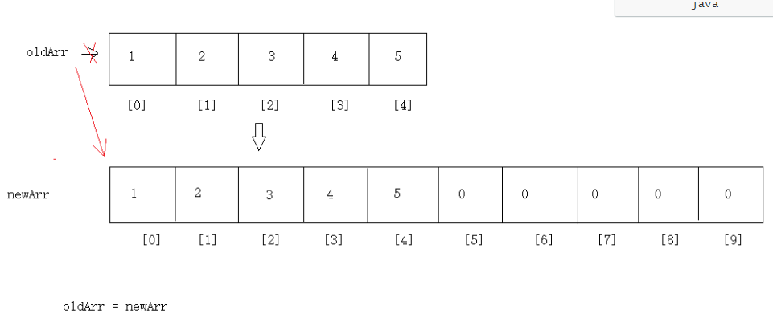
9.练习_数组合并
java
数组合并
int[] arr1 = {1,2,3}
int[] arr2 = {4,5,6}
java
public class Demo05Array {
public static void main(String[] args) {
int[] arr1 = {1,2,3};
int[] arr2 = {4,5,6};
//创建新数组
int[] newArr = new int[arr1.length+arr2.length];
for (int i = 0; i < arr1.length; i++) {
newArr[i] = arr1[i];
}
/*
由于已经保存了arr1的三个元素
所以我们保存arr2的元素时,就不能从索引0开始了,不然从arr1中保存的元素会被arr2的元素覆盖
arr2的元素需要从newArr的索引3开始保存
*/
//先获取arr1的长度为3
int len = arr1.length;
for (int i = 0; i < arr2.length; i++) {
/*
newArr[3+0] = arr2[0] ;i++
newArr[3+1] = arr2[1] ;i++
newArr[3+2] = arr2[2]
*/
newArr[len+i] = arr2[i];
}
for (int i = 0; i < newArr.length; i++) {
System.out.print(newArr[i]+" ");
}
}
}
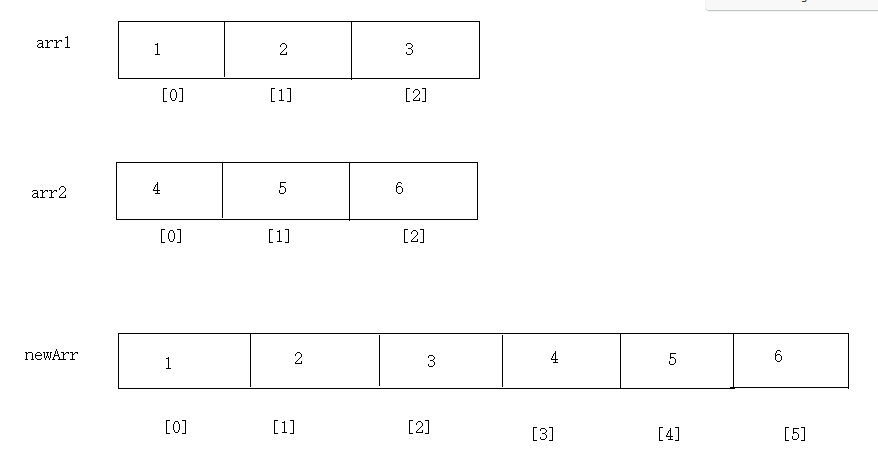
第五章.内存图
java
1.内存:可以理解"内存条",任何程序,软件运行起来都会在内存中运行,占用内存,在java的世界中,将内存分为了5大块
2.分为哪5大块
栈(重点)(Stack)
主要运行方法,方法的运行都会去栈内存中运行,运行完毕之后,需要"弹栈",腾空间
堆(重点):(Heap)
每new一次,都会在堆内存中开辟空间,并为此空间自动分配一个地址值
堆中的数据都是有默认值的
整数:0
小数:0.0
字符: '\u0000'
布尔:false
引用:null
方法区(重点)(Method Area)
代码的"预备区",记录了类的信息以及方法的信息
本地方法栈(了解):专门运行native方法(本地方法)
本地方法可以理解为对java功能的扩充
有很多功能java语言实现不了,所以就需要依靠本地方法完成
寄存器(了解) -> 跟CPU有关
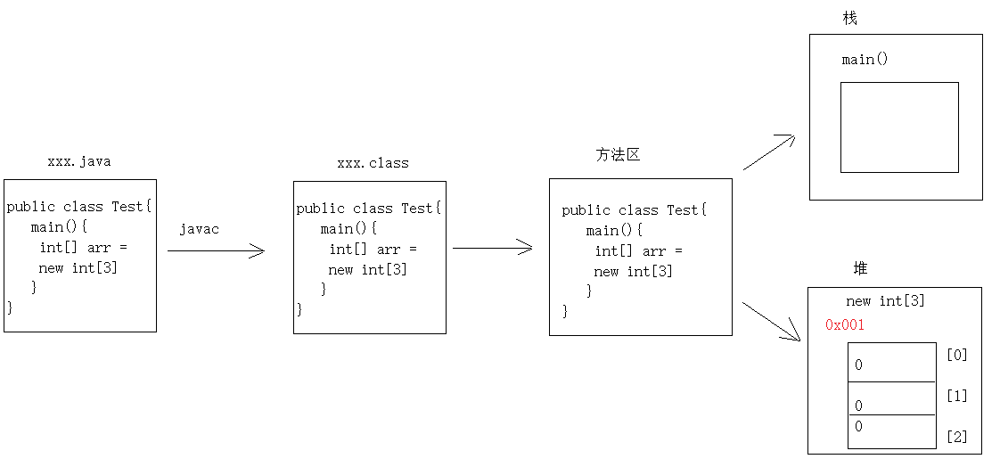
1.一个数组内存图
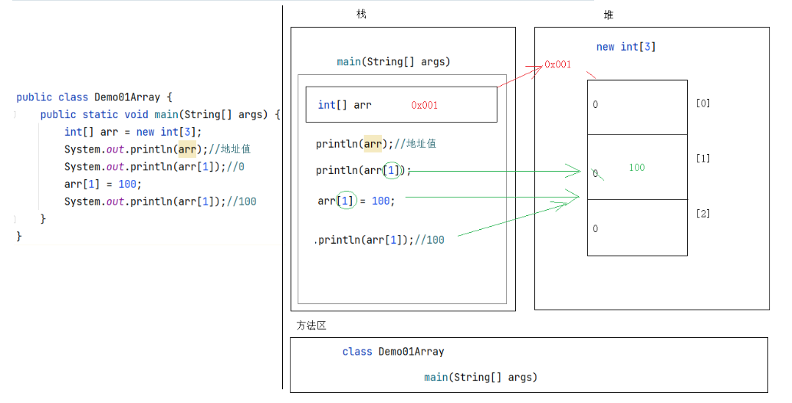
2.两个数组内存图
java
我们创建了两个数组,在堆内存中开辟了两个不同的空间,此时修改一个数组中的元素不会影响到另外一个数组中的数据
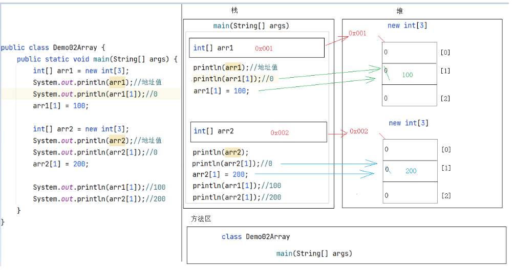
3.两个数组指向同一片内存空间
java
arr2不是new出来的,是arr1直接赋值的,arr1在内存中保存的是地址值,给了arr2,那么arr2的地址值和arr1就是一样的
所以此时arr1和arr2指向了堆内存中的同一片空间(同一个地址值,同一个数组),此时改变一个数组中的元素会影响到另外一个数组
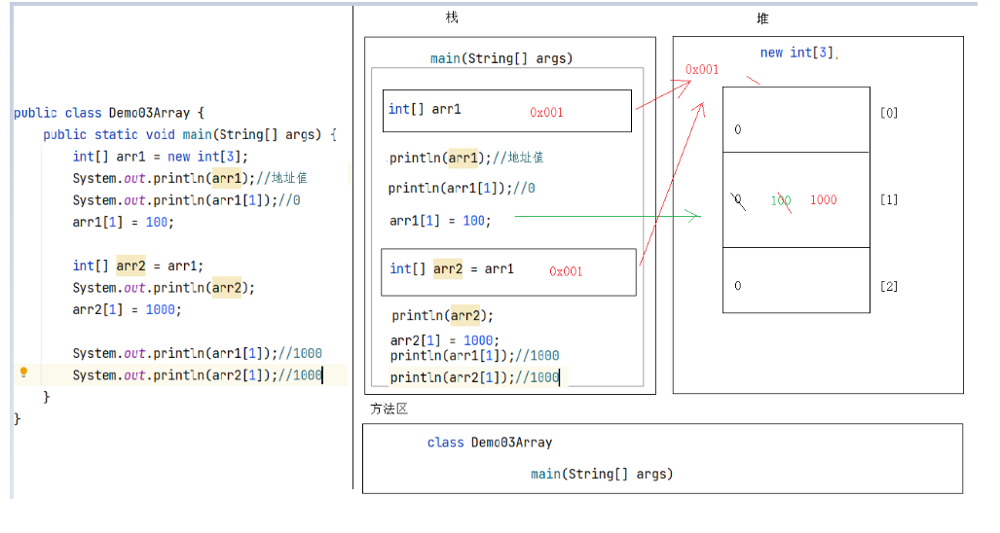
第六章.二维数组
1.二维数组的定义格式
java
1.概述:数组中的套多个数组
2.定义格式
a.动态初始化
数据类型[][] 数组名 = new 数据类型[m][n]
数据类型 数组名[][] = new 数据类型[m][n]
数据类型[] 数组名[] = new 数据类型[m][n]
m:代表的是二维数组的长度
n:代表的是二维数组中每一个一维数组的长度
数据类型[][] 数组名 = new 数据类型[m][] -> 二维数组中的一维数组没有被创建
b.静态初始化
数据类型[][] 数组名 = new 数据类型[][]{{元素1,元素2...},{元素1,元素2...},{元素1,元素2...}}
数据类型 数组名[][] = new 数据类型[][]{{元素1,元素2...},{元素1,元素2...},{元素1,元素2...}}
数据类型[] 数组名[] = new 数据类型[][]{{元素1,元素2...},{元素1,元素2...},{元素1,元素2...}}
c.简化静态初始化:
数据类型[][] 数组名 = {{元素1,元素2...},{元素1,元素2...},{元素1,元素2...}}
数据类型 数组名[][] = {{元素1,元素2...},{元素1,元素2...},{元素1,元素2...}}
数据类型[] 数组名[] = {{元素1,元素2...},{元素1,元素2...},{元素1,元素2...}}
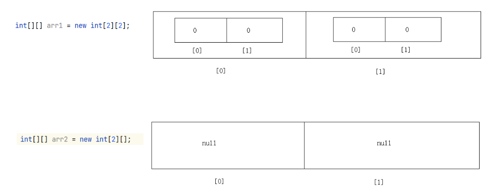
java
public class Demo01Array {
public static void main(String[] args) {
int[][] arr1 = new int[2][2];
int[][] arr2 = new int[2][];
System.out.println("======================");
String[][] arr3 = {{"孙悟空","唐僧"},{"刘备","关羽","张飞"},{"宋江"},{"林黛玉","贾宝玉","王熙凤","薛宝钗"}};
}
}
2.获取二维数组长度
java
1.格式:
数组名.length
2.获取每一个一维数组长度,需要先遍历二维数组,将每一个一维数组从二维数组中拿出来
java
public class Demo02Array {
public static void main(String[] args) {
String[][] arr = {{"张三","李四"},{"王五","赵六","田七"},{"猪八","牛九"}};
System.out.println(arr.length);
for (int i = 0; i < arr.length; i++) {
/*
arr[i]代表的是每一个一维数组
*/
System.out.println(arr[i].length);
}
}
}
3.获取二维数组中的元素
java
1.格式:
数组名[i][j]
i:代表的是一维数组在二维数组中的索引位置
j:代表的是元素在一维数组中的索引位置
java
public class Demo03Array {
public static void main(String[] args) {
String[][] arr = {{"张三","李四"},{"王五","赵六","田七"},{"猪八","牛九"}};
System.out.println(arr[0][0]);
System.out.println(arr[2][0]);
System.out.println(arr[1][1]);
}
}
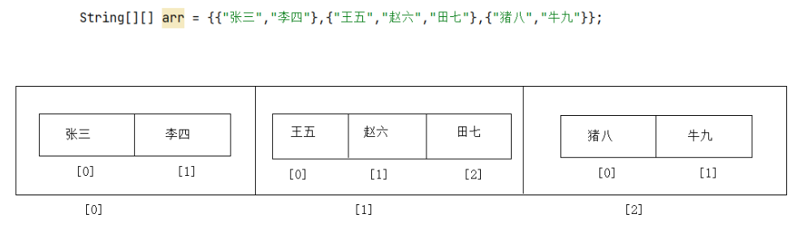
4.二维数组中存储元素
java
1.格式:
数组名[i][j] = 值
i:代表的是一维数组在二维数组中的索引位置
j:代表的是元素在一维数组中的索引位置
java
public class Demo04Array {
public static void main(String[] args) {
String[][] arr = new String[2][2];
arr[0][0] = "张飞";
arr[0][1] = "李逵";
arr[1][0] = "刘备";
arr[1][1] = "宋江";
System.out.println(arr[0][0]);
System.out.println(arr[0][1]);
System.out.println(arr[1][0]);
System.out.println(arr[1][1]);
}
}
5.二维数组的遍历
java
1.先遍历二维数组,将每一个一维数组遍历出来
2.再遍历每一个一维数组,将元素获取出来
java
public class Demo05Array {
public static void main(String[] args) {
String[][] arr = new String[2][2];
arr[0][0] = "张飞";
arr[0][1] = "李逵";
arr[1][0] = "刘备";
arr[1][1] = "宋江";
//遍历二维数组
for (int i = 0; i < arr.length; i++) {
/*
arr[i]代表的每一个一维数组
*/
for (int j = 0; j < arr[i].length; j++) {
System.out.println(arr[i][j]);
}
}
}
}
6.二维数组内存图
java
public class Demo06Array {
public static void main(String[] args) {
int[][] arr1 = new int[3][];
arr1[1] = new int[]{1,2,3};
arr1[2] = new int[3];
arr1[2][1] = 100;
}
}
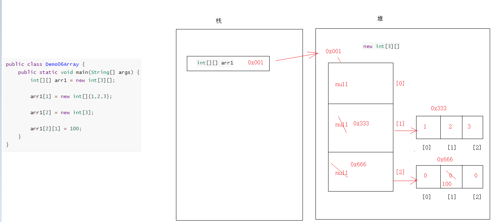